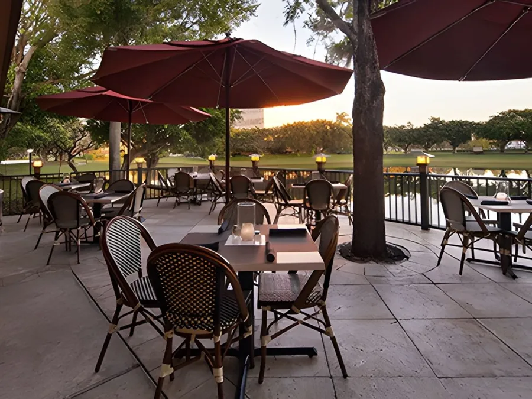

Closest + gluten-sensitive menu
1. Seasons 52
Boca Raton · Glades Rd, off I-95
Fresh grill and wine bar
- Friday: Open until 11 PM Friday
- Drive: about 15 min from home in Boca, arrive about 6:30 PM
- Price: $$$ · OpenTable lists $31–$50
- Rating: 4.8 on OpenTable from 12,844 reviews
A warm dining room with soft lighting, comfy booths, a piano bar and a tucked-away patio over a lake, per OpenTable diners.
Why it fits you two
After this week, a short drive and a menu Caitlin doesn't have to quiz anyone about is worth a lot. Everything is oak-grilled or brick-oven roasted with no fryer in the kitchen, and the piano bar keeps it from feeling like a regular weeknight.
What to order
Wood-Grilled Filet MignonRoasted mushrooms, broccolini, Yukon mash, red wine sauce. On the gluten-sensitive menu. Don's non-fish pick
Kona-Crusted Lamb LoinBroccolini, Yukon mash, herb butter. On the gluten-sensitive menu
Rotisserie Half ChickenGreen beans, wild rice pilaf, lemon-honey glaze. On the gluten-sensitive menu, an easy order for Caitlin
Gluten-free pick
Seasons 52 prints a gluten-sensitive menu every day (dishes made without gluten-containing ingredients), including the filet, lamb loin, pork chop, rotisserie chicken, golden beet salad and flatbreads on a gluten-sensitive crust. The kitchen is shared, so tell your server.Caitlin's drink: no zero-proof list published
Seasons 52 doesn't post a zero-proof list online. Ask the bartender for a mocktail.Music
Piano bar with live entertainment, per the restaurant's listing. Call (561) 998-9952 to confirm Friday's pianist."One of the best lamb dishes I have ever had, and at a reasonable price!"OpenTable diner review, Nov 2026
Book on OpenTable and ask for a booth or the patio. Valet or self-parking. Casual dress. 2300 NW Executive Center Dr, Boca Raton.
Photos: Seasons 52 on OpenTable